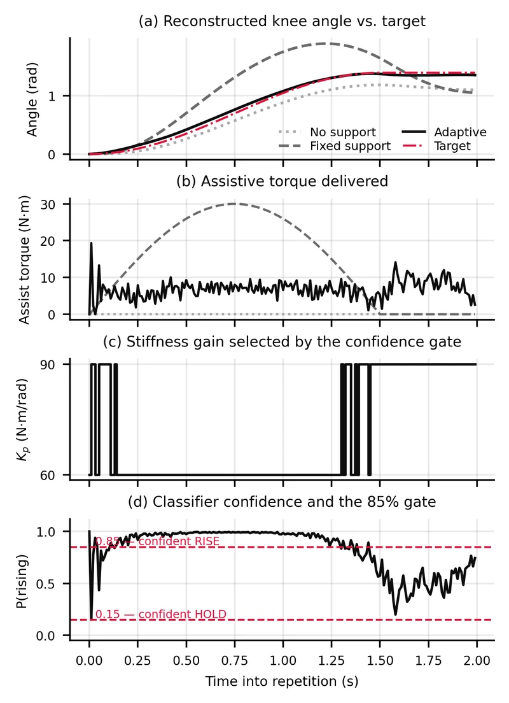

KneeExoskeleton
Genuvalens · Summer 2026 · Design and simulation · Guidance from the EPIC Lab, Georgia Tech
I designed and simulated an assist-as-needed knee exoskeleton for squat-to-stand movement after ACL reconstruction: an impedance controller with a leg-asymmetry term and a logistic-regression phase classifier. Model results, not patient outcomes. Seven-page IEEE-format report, presented August 23, 2026.
Condition, five repetitionsExtensionPeak athlete torque
No support87.2%9.6 N·m
Fixed support113.9%23.3 N·m
Adaptive, Genuvalens98.0%3.6 N·m


LoquarMandarin, in an open world
Product · Co-founder and CTO · In development · No release date
A language-learning web app I am building with friends, beginning with Mandarin. It teaches through conversation in an open world instead of a lesson list. I am responsible for implementing the systems, the interface design and the code.
- Daedalus. A cooperative survival-horror game on Roblox for two to six players, set in a changing labyrinth. Main builder in a three-person team; working toward an alpha.
- This site. Three editions built by hand in HTML, CSS and JavaScript: a terminal, an editorial and this poster. No framework, no build step.